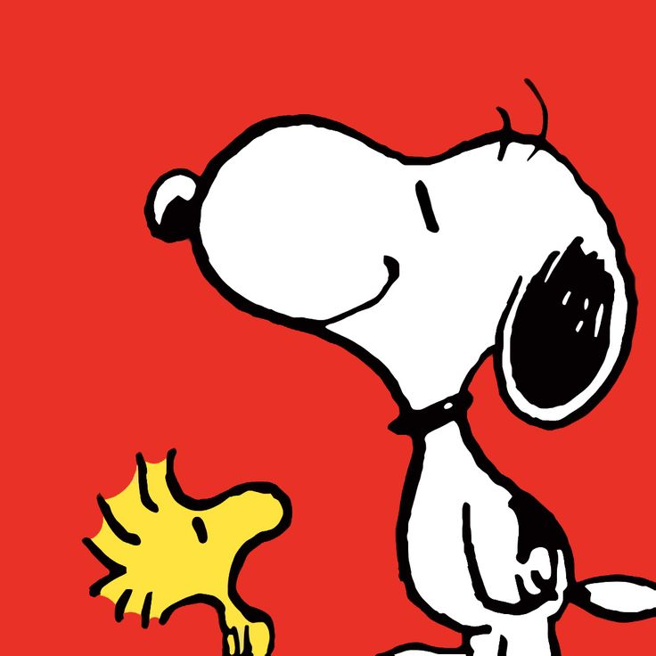
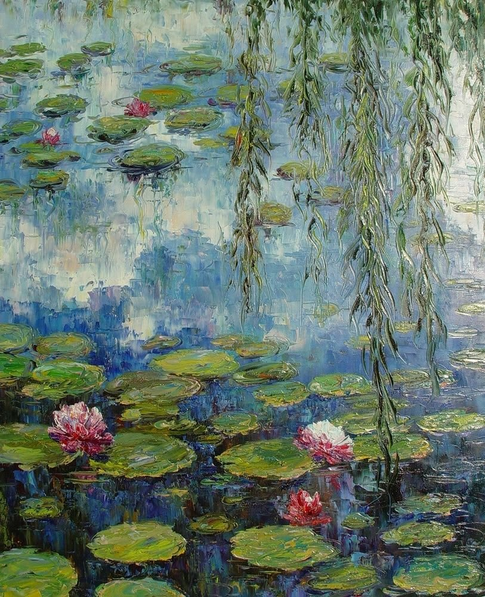
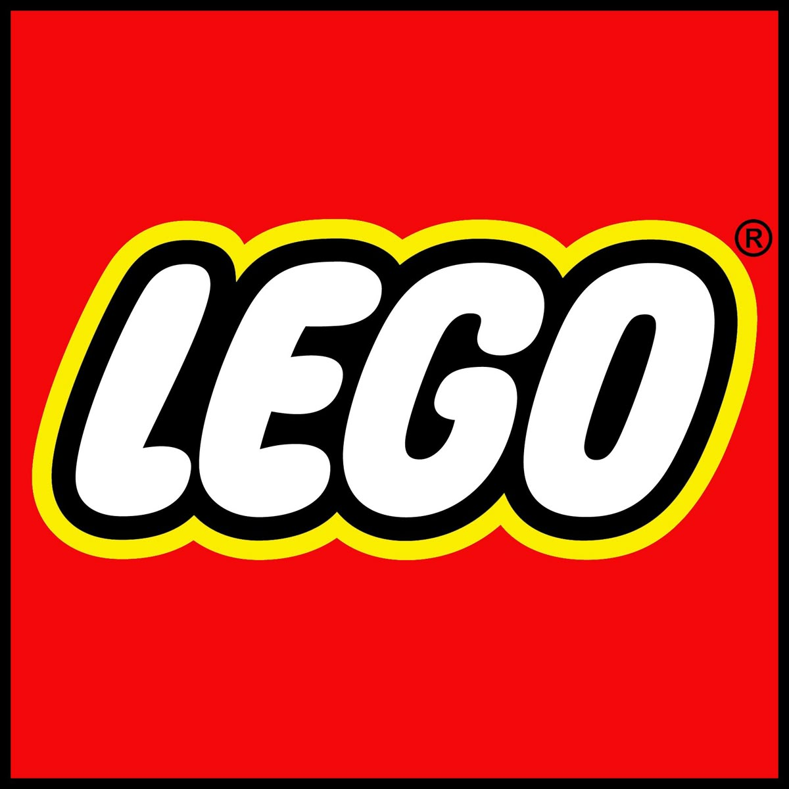
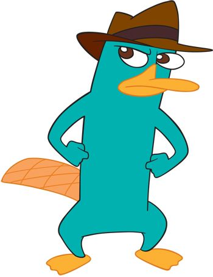
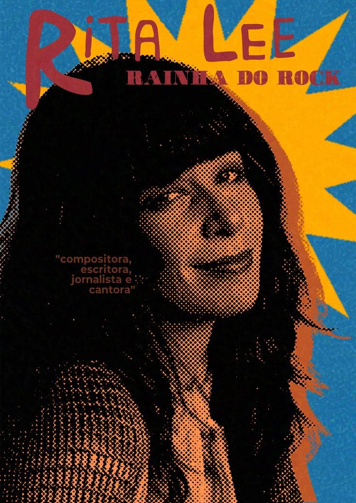

Rascunhos para discutir antes de implementar: o fluxo completo do jogo (abertura → nome → como jogar → fases → resultado final), o telão de ranking e o painel do moderador. No fim, como os dados ficam no Firebase.
Logo depois do nome. Três passos curtos com mini ilustrações (uma frase cada, para não virar leitura no evento). Passa sozinha em ~15 s ou ao tocar em “Começar”.
Como jogar
Mexa em matiz, saturação e luminosidade até cada cor ficar igual à amostra.
Veja as cores da imagem e escolha a combinação: complementar, análoga, tríade…
Quanto mais perto da cor e da harmonia certas, mais pontos — e seu nome vai para o ranking.
Depois da última fase. Pontuação total (percepção de cor + harmonias), um título divertido, a posição na rodada e o resumo de cada fase. As respostas certas não aparecem aqui: só ✓ ou ✗, para não passar a resposta a quem ainda está jogando. Elas são reveladas quando o moderador encerra a rodada. Volta sozinha para a abertura em ~20 s.
Resultado
Ana Clara
3º lugar nesta rodada
Suas fases

93% cor✓ harmonia
71% cor✗ harmonia
88% cor✓ harmonia
64% cor✓ harmonia
79% cor✗ harmoniaRespostas certas: reveladas no fim da rodada.
Página só de exibição (TV ou projetor), tema claro e centralizada. Mostra os 20 primeiros da rodada atual (não do histórico, já que visitantes vão e vêm) e, em destaque, o recorde do evento — que não é apagado ao começar uma nova rodada. Quem acabou de jogar aparece destacado por alguns segundos.
Ranking · rodada da manhã · 47 jogadores
Protegido por PIN. Controla as regras sem mexer no código: quantas fases por pessoa e quais entram no sorteio, tempos, modo simulação (só aqui), rodadas (encerrar a rodada revela as respostas e começa outra; o recorde do evento é mantido), exportar e o estado das estações.
Cloud Firestore guarda tudo num lugar só: todos os PCs, o telão e o painel leem e gravam em tempo real. O jogo continua abrindo sem servidor; só precisa de internet no evento.
Regras da partida definidas pelo moderador: fases por pessoa, fases ativas, tempos, modo simulação, rodada atual.
Cada partida: nome, rodada, estação, pontos por fase (cor e harmonia), total e horário. O telão lê os 20 melhores da rodada atual.
Melhor pontuação do evento, separada das rodadas: não é apagada ao encerrar uma rodada.